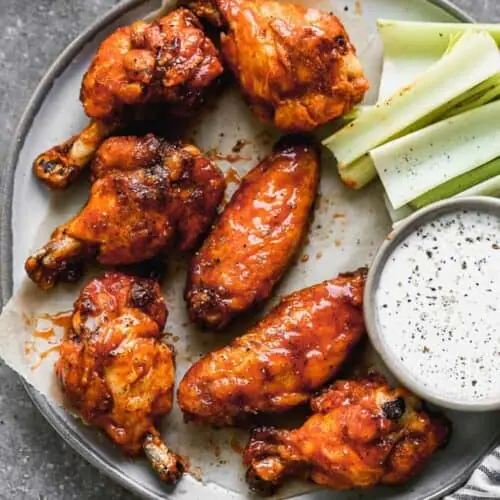

Crispy Baked Chicken Wings
- Total time50 mins
- Serves8
- Ingredients9
- Steps9

Ingredients
- 4 pounds chicken wings , halved at joints, wingtips discarded
- 2 Tablespoons baking powder* , aluminum free
- 3/4 teaspoon salt
- 1/2 teaspoon cracker black pepper
- 1 teaspoon paprika
- 1 teaspoon garlic powder
Buffalo Sauce
- 1/3 cup Frank's Wings Hot Sauce
- 1 1/2 cups light brown sugar
- 1 Tablespoon water
Directions
- Adjust your oven rack to the upper-middle position. Preheat oven to 425 degrees F.
- Line a baking sheet with aluminum foil and place a wire rack (I use a cooling rack) on top. Spray the rack with non-stick spray.
- Use paper towels to pat the wings dry and place them in a large bowl. It's important to dry them REALLY well!
- Combine the salt, pepper, garlic powder, paprika, and baking powder in a small bowl. Then sprinkle the seasoning over the wings, tossing to evenly coat.
- Arrange wings, skin side up, in single layer on prepared wire rack.
- Bake on the upper middle oven rack, turning every 20 minutes until wings are crispy and browned. The total cook time will depend on the size of the wings but may take up to 1 hour.
- Remove from oven and let stand for 5 minutes. Transfer wings to bowl and toss with sauce.
To make the buffalo sauce
- In a medium saucepan over medium heat stir together all sauce ingredients. Mix well until sugar has dissolved.
- Remove from heat and allow to cool to room temperature before adding to wings (or prepare the sauce ahead of time and refrigerate).
Recipe credit: tastesbetterfromscratch.com)